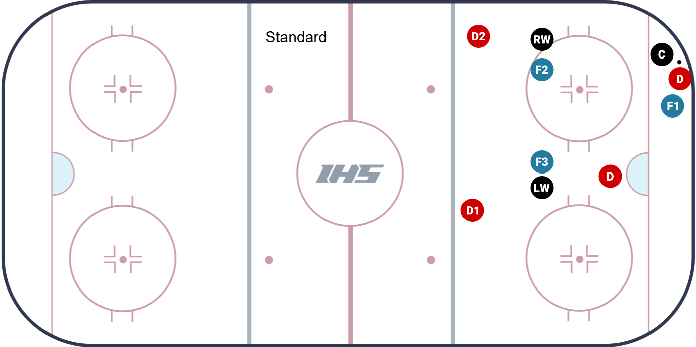
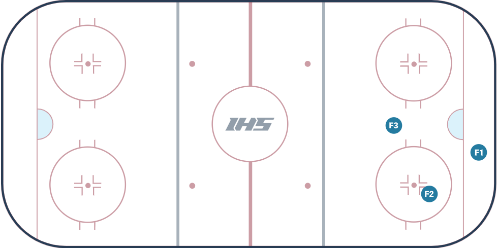

Forward Responsibilities In Offensive Zone (F1-F2-F3)
F1 - The First Forward
Responsibilities
Should be deep in the offensive zone, maintaining possession and creating scoring opportunities.
Possession:Drive the play. Attack the net, create scoring chances, and protect the puck.
Pressure:Pressure the puck carrier immediately and force mistakes. Be first on loose pucks.
Battle:Go for the puck and engage in physical battles to gain control.
F2 - The Second Forward
Responsibilities
Should be getting open for passes and providing support in the offensive zone.
Possession:Support F1 by finding open ice, being ready for passes, and helping maintain possession.
Pressure:Support F1's, take away passing options, and be ready to win loose pucks.
Battle:Be ready to engage in physical battles to gain control of the puck.
F3 - The Third Forward
Responsibilities
The F3 forward provides defensive security in the offensive zone. By maintaining high positioning inside the blue line, F3 blankets central counter-attacks and covers late dangerous assignments.
Possession:Stay above the puck, provide an outlet option, and be ready to cover defensively if possession is lost.
Pressure:Stay above the puck, provide an outlet option, and be ready to cover defensively if possession is lost.
Battle:Stay above the puck, provide an outlet option, and be ready to cover defensively if possession is lost.


Find videos
Look for videos that can work like the communication tab
A structured forward attack relies on continuous positional rotation. Fixed tags do not exist; players switch responsibilities dynamically based on their distance from the puck.
Filling the Void: If F3 sees an opening and drives down to attack a broken play, the closest recovering forward must rotate high into the F3 safety valve position.
Spacing Discipline: Forwards must avoid packing closely into identical zones. Effective puck management depends on maintaining vertical and horizontal gaps.
Continuous Communication: Vocal cues are essential to alert teammates of rotations, cross-swaps, and behind-the-back tracking adjustments.